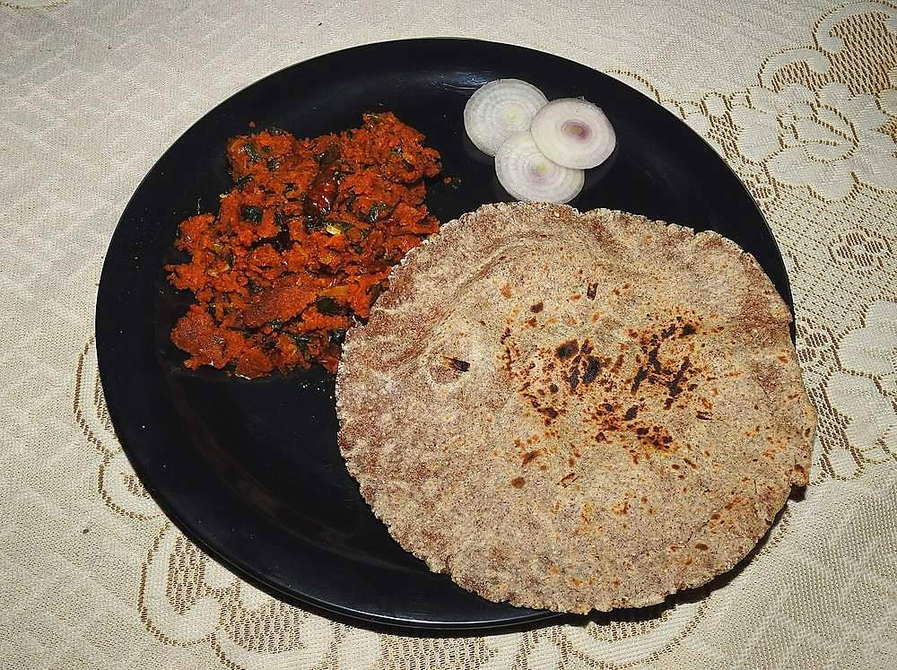

Prep10 min
Cook15 min
Active25 min
Serves4
Difficultyeasy
Contains: peanuts, mustard
Checked against the ingredient list for ten allergens: milk, egg, fish, crustaceans, tree nuts, peanuts, sesame, mustard, soy and gluten. Brands vary, so read the label on anything new to you.
Ingredients
Quantities for 4.
- 100g (about 1 cup) Besan
- 2 medium, finely chopped Onion
- 6 cloves, crushed Garlic
- 3, finely chopped Green Chilli
- 4 tbsp Groundnut Oil
- 1 tsp Mustard Seeds
- 1 tsp Cumin Seeds
- 10 Curry Leaves
- 1/2 tsp Turmeric
- 1 tsp Chilli Powder
- 1/4 tsp Asafoetidause compounded-free hing to keep this gluten-freeoptional
- 150ml, hot Water
- 3 tbsp, chopped Coriander Leavesoptional
- to taste Salt
Cookware
stovetop, kadhai
Before you start
- Dry-roast the besan first and let it cool. This is what separates zunka from a bowl of raw-tasting paste.
- Boil the water before you start. Cold water into hot besan sets lumps instantly.
- Chop the onion fine; big pieces stay wet and the zunka will not crumble.
Method
- Dry-roast the besan in the pan over low heat for 3 to 4 minutes, stirring, until it turns a shade darker and smells nutty. Tip it out and let it cool.Besan scorches at the bottom while the top still looks pale. Keep it moving.
- Heat the oil, add the mustard seeds and wait for them to pop, then the cumin, curry leaves and hing.
- Add the onion and cook 5 minutes over medium heat until soft and translucent, soft, not browned.
- Stir in the garlic and green chilli and fry 1 minute.
- Add the turmeric, chilli powder and salt, then pour in the hot water and bring it to a boil.
- Lower the heat and sprinkle the roasted besan over the surface in a thin stream with one hand while stirring hard with the other.Sprinkle, never dump. A single spoonful tipped in at once becomes a lump you cannot break up.
- Cover and cook on the lowest heat for 5 minutes without stirring, then take the lid off and break the mass up with a fork into a coarse crumble.
- Drizzle over a spoonful of raw oil, fold through the coriander and serve with jowar bhakri and raw onion.
Storage
Keeps 2 days refrigerated. Reheat covered over low heat with a sprinkle of water for 3 minutes; do not microwave it dry or it turns to sand.
Nutrition Good estimate
Low protein: 7 g a serving, 11% of the calories
| Per serving117 g | Per 100 g | |
|---|---|---|
| Calories | 259 kcal | 223 kcal |
| Protein | 7.3 g | 6 g |
| Carbohydrate | 23.2 g | 20 g |
| of which sugars | 5.5 g | 5 g |
| Fibre | 4.6 g | 4 g |
| Fat | 15.9 g | 14 g |
| of which saturated | 2.5 g | 2 g |
| of which unsaturated | 12.2 g | 10 g |
Nearest database match used for asafoetida, curry leaves. Estimated from raw ingredients using USDA FoodData Central.
Times, yields, allergens and nutrition are guidance. Use your own judgement on doneness and on storing. More in About.